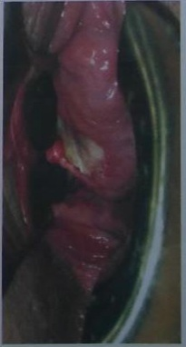

Paciente de 40 anos refere dor vulvar intensa há 2 dias, com o seguinte achado clínico: Qual é o tratamento adequado?

A Ceftriaxone.
B Valaciclovir.
C Clotrimazol.
D Penicilina.
Uma mulher de 25 anos de idade procurou atendimento com queixa de lesão vulvar há uma semana. Refere ter tido relação desprotegida recentemente. Nega doenças crônicas, febre ou qualquer outro sintoma associado. Ao exame, presença de úlcera única em pequeno lábio à direita, indolor, com bordos endurecidos e fundo limpo, e linfonodomegalia inguinal bilateral, de caráter inflamatório. Com base nesse caso hipotético, assinale a alternativa que apresenta, respectivamente, o diagnóstico e o exame por meio do qual ele pode ser confirmado.
Paciente de 18 anos de idade refere que estava assintomática até 5 dias atrás, quando notou aparecimento de ferida de 2 cm na vulva. Refere que se relaciona sexualmente com outras mulheres. Segundo o Ministério da Saúde, deve-se:
Paciente refere que há um dia notou úlcera genital dolorosa, e que hoje apareceram outras lesões também dolorosas. Ao exame observam-se úlceras dolorosas nos lábios, de fundo sujo e bordas sobrelevadas, em espelho. O diagnóstico provável e o tratamento são, respectivamente?
Paciente de 40 anos refere dor vulvar intensa há 2 dias, com o seguinte achado clínico: Qual é o tratamento adequado?
Fase de inoculação do Linfogranuloma venéreo (LGV) inicia-se por pápula, pústula ou exulceração indolor, que desaparece sem deixar sequela. Somente podemos indicar como errado o item:
As úlceras genitais representam síndrome clínica, sendo muitas vezes causadas por IST, e se manifestam como lesões ulcerativas, precedidas ou não por pústulas e/ou vesículas, acompanhadas ou não de dor, ardor, prurido, drenagem de material mucopurulento, sangramento e linfadenopatia regional. Assinale a alternativa ERRADA.
Sobre a sífilis, assinale a alternativa INCORRETA.
Úlceras genitais (UG) são lesões localizadas na vulva, vagina ou colo uterino com perda de tecido, envolvendo a epiderme e a derme ou apenas a epiderme. Três mulheres com vida sexual ativa são atendidas, referindo úlcera genital: - Maria, 22 anos: o quadro é recorrente e iniciado por hiperemia vulvar seguida do surgimento de vesículas agrupadas que, após, rompem-se formando exulceração dolorosa, seguida de resolução sem deixar marcas. - Joana, 19 anos: observa-se a presença de lesão única com bordas endurecidas em intróito vaginal. Além da úlcera observa-se adenopatia bilateral (inguinal), indolor e não inflamatória; - Antônia, 24 anos: inicialmente surgiram três lesões nodulares que evoluíram para úlcera não dolorosa e altamente vascularizada, sangrando facilmente com o contato; Com base no quadro clínico das pacientes a principal hipótese diagnóstica dentre as opções abaixo para Maria, Joana e Antônia respectivamente são:
Adolescente de 15 anos, feminino, procura Unidade Básica de Saúde com queixa de ferida em vulva há 7 dias. Relata sexarca aos 13 anos, 5 parcerias sexuais nos últimos 6 meses e não usa preservativos. Faz uso regular de anticonceptivo hormonal injetável; última menstruação há 15 dias. Exame físico da região genital: presença de úlcera indolor, endurecida, sem secreção em grande lábio esquerdo. Linfonodos inguinais palpáveis, broelásticos, móveis indolores, o maior medindo 2,0 x 2,0cm. Não há disponibilidade para a realização de exame bacterioscópico da lesão. Qual a conduta mais adequada para o caso?
A infecção pelos vírus da herpes simples tipos 1 e 2 é extremamente comum em mulheres na idade fértil. Estima-se que sua prevalência aproxime-se de 70% em gestantes. Sobre a infecção fetal por essa patologia, assinale a alternativa correta.
O linfogranuloma venéreo (LGV) é uma doença infecciosa sistêmica e crônica cujos principais efeitos resultam em dano ao sistema linfático de drenagem da infecção. Analise as assertivas sobre o tema. I. O agente etiológico é Calmmatobacterium granulomatis. II. O agente etiológico é a Chlamydia trachomatis. III. Também denominada de linfogranuloma inguinal e doença de Nicolas-Favre-Durand. IV. O agente etiológico é o Haemophilus ducreyi. Está CORRETO o que se afirma em:
Uma paciente de vinte e cinco anos de idade consultou-se com ginecologista por apresentar lesão vulvar que, segundo ela, havia surgido cerca de seis dias após uma relação sexual desprotegida. No exame físico, ela apresentava lesão ulcerada localizada na face interna dos grandes lábios, dolorosa, sangrante, com bordas irregulares, eritematosas, com fundo purulento e de odor fétido. Considerando o precedente caso clínico, julgue o item subsecutivo. O debridamento cirúrgico de úlceras vulvares de origem infecciosa melhora a eficácia do tratamento antimicrobiano.
Os aspectos clínicos das úlceras genitais são bastante variados e têm baixa relação de sensibilidade e especi cidade com o agente etiológico, mesmo nos casos considerados clássicos. Sendo inadequado que:
Linfogranuloma venéreo e granuloma inguinal (donovanose) devem ser tratados com:
Paciente de 23 anos procura unidade básica de saúde apresenta úlcera genital com evolução de 3 dias , sem história prévia de vesículas. Tem vida sexual ativa e não possui o hábito de usar preservativos. Considerando que não há possibilidade de solicitação de exames laboratoriais , nem garantia de retorno da paciente ao ambulatório, qual seria a melhor conduta?
Assinale a correlação verdadeira, relativa a ISTs:
Assinale a alternativa correta quanto ao diagnóstico das infecções sexualmente transmissíveis. I. A lesão clínica inicia-se como uma pápula ou vesículas que progride rapidamente para uma ou múltiplas úlceras, dolorosas, com base amolecida e fundo purulento. II. Inicia-se com lesão nodular, indolor, única ou múltipla, subcutânea, que pode erosar e produzir ulceração de crescimento lento e sangrante. III. Inicia-se pela presença de úlcera única, de fundo liso e limpo, indolor e endurecida. O quadro clínico corresponde, respectivamente à:
Paciente, 24 anos, procura assistência médica devido a uma "ferida" na região vulvar. Refere ser dolorosa e surgiu há 5 dias. Nega prurido. São afirmativas corretas, exceto:
Correlacione os itens e assinale a alternativa correta. 1. Rash maculopapular que pode envolver todo o corpo e inclui palmas das mãos, as solas dos pés e as mucosas; 2. Úlcera isolada, firme ao toque, com bordas arredondadas levemente elevadas e base não infectada; 3. Nódulos inflamatórios indolores, que evoluem para úlceras avermelhadas e friáveis, que cicatrizam por brose e resultam em cicatrizes; 4. Vesícula dolorosa que evolui para ulceração e formação de crosta; 5. Uma ou várias pápulas com umbilicação central. I. Molluscum contagiosum; II. Sífilis primária; III. Donovanose; IV. Herpes; V. Sífilis secundária. A sequência correta é:
Paciente de 18 anos procurou serviço médico em pronto atendimento de sua região com queixa de dor, que ca intensa quando urina (contato da urina com as lesões), queimação vaginal e coceira. Há 10 dias percebeu umas "bolinhas" (vesículas) em suas partes intimas. Relata ter ido ao médico da UBS e foi prescrito uma pomada que usou por sete dias sem melhora. Foi questionada se já havia apresentado esse quadro anteriormente e respondeu que essa era a primeira vez que apresentava essa queixa. Menarca aos 11 anos, vida sexual ativa desde os 13 anos com um total de oito parceiros até o momento. Informou ainda que fez um tratamento para verruga genital há 2 anos quando estava grávida. Há dois dias acabou o seu namoro. Marque a alternativa incorreta:
Revisar: possível letra faltando em enunciado
Sobre o cancro mole, é CORRETO afirmar que:
Mulher de 40 anos de idade vem para consulta na unidade básica de saúde por dor na região genital há dois dias. É solteira, não tem parceiro xo, mas tem vida sexual ativa. Nega outros antecedentes mórbidos relevantes. No exame clínico é feito o diagnóstico de primoinfecção herpética. Além do tratamento medicamentoso para a paciente, qual é a conduta para o caso?
O cancro mole, cancro venéreo simples ou cancro de Ducrey é uma afecção provocada pelo Haemophilus ducrey. Caracteriza-se por lesões em geral múltiplas ou única, que são dolorosas e têm aspecto purulento. Quanto ao seu tratamento, são várias as opções. O medicamento que NÃO deve ser utilizado para o tratamento do cancro é
Paciente de 18 anos vem à consulta com queixa de ferida em genital e conta que teve relação sexual sem uso de preservativo com vários parceiros nos últimos meses. Faz uso correto de contraceptivo hormonal oral combinado. Nega outras doenças ou alergia a medicamentos. Considerando-se as DSTs e o uso do Fluxograma para Manejo de úlcera genital proposto pelo Ministério da Saúde, assinale a alternativa CORRETA.
As úlceras genitais representam síndrome clínica produzida por agentes infecciosos sexualmente transmissíveis e que se manifestam como lesões ulcerativas erosivas, precedidas ou não por pústulas e/ou vesículas, acompanhadas ou não de dor, ardor, prurido, drenagem de material mucopurulento, sangramento e linfadenopatia regional. Em aspecto específico, assinale o agente etiológico da donovanose.
Adolescente de 17 anos procura atendimento por úlceras, rasas, em região genital externa, dolorosas, com bordas hiperemiadas, irregulares, que surgiram há cerca de uma semana após coito, associadas a linfonodos inguinais ingurgitados e dolorosos, sendo que alguns se mostram como abcessos com utuação na virilha. Em esfregaço de material das lesões, verificam-se cocobacilos curtos, aos pares, intra e extracelulares, às vezes formando cadeias. O diagnóstico e o tratamento são, respectivamente:
Gestante a termo, com quadro de rotura prematura das membranas há duas horas, sem metrossístoles, feto vivo e líquido amniótico claro com grumos. Ao exame genital, verificam-se lesões herpéticas ativas em borda inferior do introito vaginal. A conduta, neste caso, é:
O agente etiológico da doença de transmissão exclusivamente sexual, mais frequente nas regiões tropicais, que se caracteriza por apresentar lesões múltiplas (podendo ser única), tipo úlceras, habitualmente dolorosas, de borda irregular, com contornos eritematoedematosos e fundo irregular, cobertas por exsudato necrótico, amarelado e de odor fétido que, quando removido, revela tecido de granulação que apresenta sangramento fácil quando submetido a traumatismos, ocorrendo na fúrcula e na face interna dos grandes lábios, lesões que produzam sintomatologia discreta no colo uterino e na parede vaginal, lesões extragenitais e infecções assintomáticas é o(a)
Gestante no primeiro trimestre apresenta lesões ulceradas em vulva, indolores, acompanhadas de linfonodomegalia inguinal superficial ipsilateral fistulizada e com supuração. Qual o tratamento correto?
Paciente de 27 anos se consultou por apresentar a lesão vaginal dolorosa reproduzida abaixo. Assinale a alternativa que contempla, na sequência, o provável diagnóstico, o agente etiológico e o tratamento indicado:

A doença infecto-contagiosa cujo diagnóstico se faz pela intradermorreação de Frei e que para o tratamento usamos Eritromicina, via oral, por 21 dias é:
Paciente 18 anos, com queixa de dor vulvar e perianal intensa há 7 dias. Ao exame apresentava vesículas agrupadas misturadas a pequenas úlceras, sem linfadenopatia inguinal dolorosa. Refere ser este um primeiro episódio. Qual o provável diagnóstico e conduta?
Paciente de 24 anos, residente e procedente de Goiânia, apresenta há três dias ulceração vulvar dolorosa com adenopatia inguinal. Neste caso, considerando
Mulher de 23 anos teve diagnóstico de herpes e, frente a este diagnóstico, é correto afirmar que:
Mulher de 21 anos consultou com médica de sistema privado de saúde por apresentar há cinco dias duas feridas dolorosas no lado direito de lábios vulvares. Por estar menstruada foi solicitado bacterioscopia pelo Gram das lesões vulvares. Por estar a médica, que lhe fez o primeiro atendimento, viajando, a paciente lhe procurou para apresentar o resultado do exame. A bacterioscopia descreve bacilos Gram-negativos compatíveis com H. ducrey. Queixou-se que há três dias percebe corrimento amarelado, fétido e não acompanhado por sintomas vaginais e urinários. Última menstruação nalizou há cinco dias e não utiliza nenhum tipo de método contraceptivo. Ao exame de genitais externos observam-se duas ulcerações rasas medindo cerca de 1 cm cada, com exsudato purulento em seu interior e à palpação bordos amolecidos e dolorosos. Ao toque ginecológico nenhuma alteração percebida. Ao exame especular observou-se conteúdo vaginal amarelado, cobrindo parcialmente o colo uterino. O teste de Whi foi positivo e o pH vaginal 5,0. Após limpeza da cavidade vaginal com ácido acético 2% observou-se drenagem de secreção amarelada proveniente do canal cervical. Com os dados disponíveis estão corretas as seguintes afirmativas: I – É frequente a associação da ulceração vulvar que esta paciente apresenta com o Treponema pallidum, constituindo o cancro misto de Rollet; II – Indica-se a solicitação de VDRL; III – Doenças como herpes genital, cancro duro e doença de Behçet cursam com ulcerações vulvares dolorosas; IV – Além das lesões vulvares esta paciente apresenta vaginose bacteriana e cervicite mucopurulenta; V – O tratamento indicado é ceftriaxona 500 mg IM em dose única, azitromicina 1 g via oral em dose única e secnidazol 2 g via oral em dose única. A seguinte alternativa contempla o enunciado desta questão:
Em relação ao diagnóstico das úlceras genitais, é CORRETO afirmar que:
Paciente de 52 anos, G2P2, menopausada há 5 anos, apresenta úlcera genital dolorosa, de fundo necrótico, com hiperemia local. Tem histórico de apresentar lesões orais como "aftas" (sic) recorrentemente. O clínico geral solicitou alguns exames complementares, a saber: VDRL (negativo), HIV (negativo), Gram e citologia da lesão (inespecí co). O diagnóstico mais provável é:
Revisar: possível letra faltando em enunciado
Paciente de 28 anos, sexualmente ativa, chega a UABSF com uma ulceração de borda plana ou hipertró ca, bem delimitada, com fundo granuloso, de aspecto vermelho vivo e de sangramento fácil na região perianal há quatro semanas. A lesão sempre foi dessa forma, não passando pelo estágio de vesícula. O micro-organismo isolado da lesão foi a Klebsiella granulomatis. Dessa forma, o tratamento de primeira escolha seria:
Revisar: possível letra faltando em enunciado
Paciente do sexo masculino, 26 anos, atendido no ambulatório de Clínica Médica, encaminhado pelo oftalmologista por apresentar panuveíte bilateral. Queixava-se também de ulcerações aftosas recorrentes, apresentando no momento do exame lesões orais dolorosas, rasas e pequenas de base necrótica central amarelada, além de lesão genital única, indolor, em escroto. Apresentava também lesões cutâneas sugestivas de pioderma gangrenoso. O teste de patergia foi positivo em 48h. Dentre as opções listadas abaixo, a que mais se relaciona às manifestações apresentadas por este paciente é:
O diagnóstico laboratorial faz-se pela intrademorreação de Frei e o tratamento com eritromicina, via oral, durante 21 dias. A descrição sugere a seguinte patologia: Respostas: 1 12 23 34